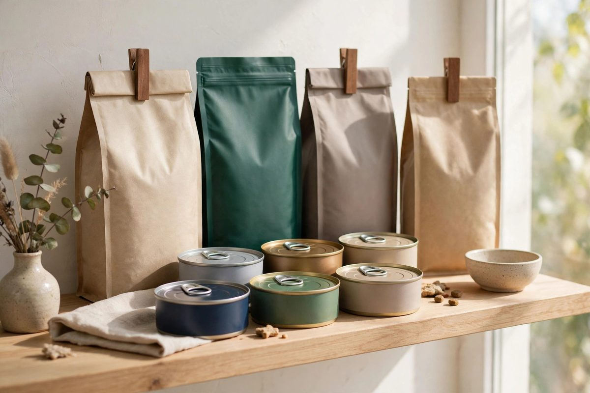

Home › Guides
Best Cat Food Brands Guide: How to Choose a Good Brand

Ask ten cat owners for the best cat food brand and you will get ten different answers. The truth is that there is no single best brand, because the best food is the one that suits your cat, your budget, and your values. What you can do is learn how to judge a brand, so that marketing does not make the decision for you.
What makes a brand trustworthy
A trustworthy brand is transparent about what it makes and where. It employs veterinary nutritionists, conducts feeding trials, and publishes the results of its research. It owns or closely controls its manufacturing, and it can tell you where its food is made.
Look for brands that have been making pet food for many years and that invest in research. Large, established manufacturers often have the most evidence behind their foods, because they can afford long feeding trials and nutritional studies. Small brands can be good too, but ask what evidence supports their claims.
Price, value, and quality
Price is a rough guide to quality, but it is not a guarantee. Very cheap foods often use lower-quality ingredients and more fillers, while very expensive foods may charge for marketing, packaging, or a fashionable ingredient rather than better nutrition.
Compare foods by cost per day, not cost per bag. A dense, high-quality food may cost more per kilogram but less per day, because the cat eats less of it. A food that your cat digests well, with firm stools and a healthy coat, is giving value, whatever the price.
Reading beyond the brand name
Judge the food, not the brand. Check the label for a statement that the food is complete and balanced for your cat's life stage. Look at the ingredients list, the protein level, and whether the food suits your cat's age and health.
Be cautious of brands that make big health claims without evidence, such as boosting immunity or detoxifying the body. These claims are marketing, not science. A brand that promises to cure disease with food is one to avoid.
Switching brands safely
If you decide to try a new brand, change gradually over seven to ten days, mixing the new food into the old one in increasing amounts. Watch the cat's stools, appetite, coat, and weight for a month. A food that causes soft stools, vomiting, or a dull coat is not the right one, whatever its reputation.
Give a new food a fair trial of at least four weeks before judging it, unless it causes obvious problems. And remember that a cat's needs change with age and health, so the best brand for a kitten may not be the best brand for a senior.
Trying a new brand: a simple checklist
When you try a new brand, give it a fair test of at least four weeks and watch four things: stools, coat, energy, and weight. Stools should be firm and regular within a few days of the change. The coat should stay glossy, energy should stay steady, and weight should stay stable. Keep a short note each week, because it is easy to forget what changed and when.
If the cat does well, stay with the food. Changing brands often, in search of something better, causes more digestive upsets than it solves. If the cat does not do well, try one different brand, and change slowly again. Ask your vet before trying a food that claims to treat a medical problem, and keep the packet so you can check the batch if the food ever causes a problem.
Frequently Asked Questions
What is the best cat food brand?
There is no single best brand. The best food is one that is complete and balanced, suits your cat's life stage and health, and that your cat eats well and thrives on.
Are expensive cat foods always better?
No. Price is a rough guide, not a guarantee. Compare cost per day and judge by your cat's health, coat and stools.
Should I trust a brand that claims to cure disease?
No. Food can support health, but a brand that promises to cure disease is making a claim it cannot prove. Ask your vet.